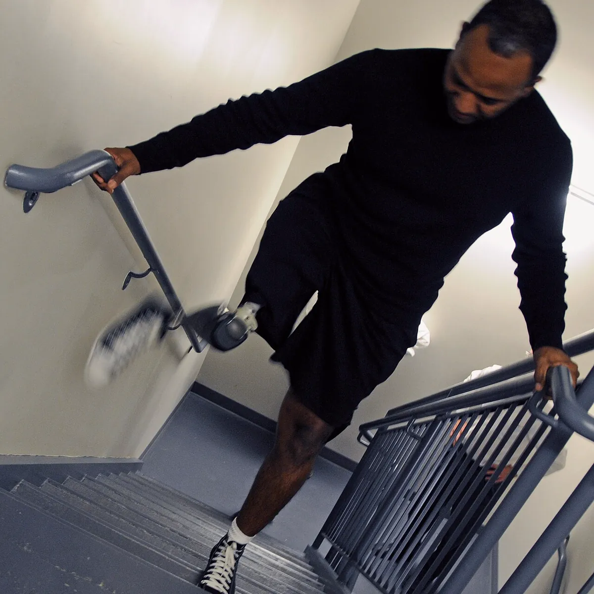
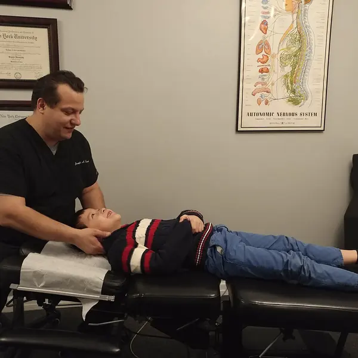

എല്ലാ ചികിത്സകളുംശരീരം
ഫിസിക്കൽ തെറാപ്പി
വ്യായാമം, ചലനം, കൈചികിത്സ എന്നിവയിലൂടെ കരുത്ത് വീണ്ടെടുക്കുന്നു. പരിക്ക്, രോഗം, ദീർഘകാല മുറുക്കം എന്നിവയ്ക്കുശേഷം സഹായകം.

എങ്ങനെ സഹായിക്കുന്നു
- ശരീരവേദന കുറയ്ക്കാൻ സഹായിക്കുന്നു
- ചലനം മെച്ചപ്പെടുത്തുന്നു
- പേശീബലം വർദ്ധിപ്പിക്കുന്നു
- വഴക്കം മെച്ചപ്പെടുത്തുന്നു
- പരിക്കിൽനിന്ന് വീണ്ടെടുക്കാൻ സഹായകം
- ശരീരത്തിന്റെ ബാലൻസ് മെച്ചപ്പെടുത്തുന്നു
- ഊർജ്ജം വർദ്ധിപ്പിക്കുന്നു
ഞങ്ങൾ നൽകുന്നവ
- സന്ധിവേദന
- നടുവേദന
- കായിക പരിക്ക്
- പക്ഷാഘാത പുനരധിവാസം
- ശരീരം മുഴുവൻ
നിങ്ങൾക്ക് യോജിച്ചത് ഏതെന്ന് ഞങ്ങളുടെ ഡോക്ടറോട് ചോദിക്കൂ.
ഈ സൈറ്റിലെ വിവരങ്ങൾ പൊതുവായ ആരോഗ്യ അവബോധത്തിനുള്ളതാണ്. ഇത് രോഗനിർണ്ണയമോ രോഗം മാറുമെന്ന വാഗ്ദാനമോ അല്ല, വൈദ്യോപദേശത്തിന് പകരവുമല്ല. നിർദ്ദേശിക്കപ്പെട്ട ചികിത്സ തുടരുകയും യോഗ്യതയുള്ള ഡോക്ടറെ സമീപിക്കുകയും ചെയ്യുക. ഞങ്ങളുടെ സേവനങ്ങൾ യോഗ്യതയ്ക്കും നിയമപരിധിക്കും ഉള്ളിലാണ് നൽകുന്നത്. പ്രതീകാത്മക ചിത്രം.
ഇതേ തൂണിൽനിന്ന്

ഫിസിയോതെറാപ്പി
ചലനം, വ്യായാമം, മസാജ്, പ്രത്യേക ഉപകരണങ്ങൾ എന്നിവയിലൂടെ പ്രവർത്തനശേഷി വീണ്ടെടുക്കുന്നു.

അസ്ഥിക്രമീകരണം
കെട്ടുവൈദ്യം എന്നറിയപ്പെടുന്ന, അസ്ഥി, സന്ധി, പേശികൾക്കുള്ള പരമ്പരാഗത കൈവിദ്യ.

കൈറോപ്രാക്റ്റിക്
നട്ടെല്ലിനും സന്ധികൾക്കും വൈദഗ്ധ്യമുള്ള കൈ അഡ്ജസ്റ്റ്മെന്റുകൾ.

കിനേഷ്യോളജി ടേപ്പിംഗ്
ചലിക്കുമ്പോൾ പേശികളെയും സന്ധികളെയും താങ്ങുന്ന ഇലാസ്റ്റിക് കോട്ടൺ ടേപ്പ്.